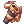
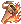

Grimgariano's Guide to the Chase
Disclaimer
Hi, I’m Grimgariano and I’ve been playing NovaRO for some months now. I’m not a player that knows A LOT about NovaRO, however, I chose to play Shadow Chaser and make it work even tho people always said to “Delete it and create an [Insert Class Here]”. While they might be right and I consider myself lucky to get some of the upgrades through the methods I did, I do disagree when they say that “It’s hard to do anything as a Shadow Chaser”, specially after the rework of  Triangle Shot (when I started to play Ragnarok Online again), which this guide/build is going to focus on.
Triangle Shot (when I started to play Ragnarok Online again), which this guide/build is going to focus on.
I would like you to know that all knowledge regarding gears and calcs are not made by me, but for a more experienced player. I’m just a person that’s trying to help new players on how to start, progress and do instances as a TriShot Shadow Chaser (Since I Lack any knowledge about  Fatal Menace and
Fatal Menace and  Auto Shadow Spell builds, but might try it when I get bored of one shotting things from a distance, hehe). So, if you want to play the best looking class in the game, keep reading :) I’ll try to keep this guide short and focus on the basics, since I think that having too much options is quite confusing for a new player, which is the main target of this guide.
Auto Shadow Spell builds, but might try it when I get bored of one shotting things from a distance, hehe). So, if you want to play the best looking class in the game, keep reading :) I’ll try to keep this guide short and focus on the basics, since I think that having too much options is quite confusing for a new player, which is the main target of this guide.
Pros vs Cons
| Pros | Cons |
|---|---|
| Great Single Target DPS | Lacks AoE for strong mobs (Looking at you, Arclouzes) |
| Can change elements easily with arrows | Have trouble fighting AGI-UP MvPs (Not a problem early on) |
| Can solo “main” instances for early-mid game | Backslide is clunky, specially with High ms |
| High survivability due to range | Will not be superior to "meta" classes |
| Easy to upgrade in early game | Is considered weak by most of players (hard to do stuff together) |
| Best looking class in the game | Until you remember to  Preserve, you’ll be lacking a (important) skill Preserve, you’ll be lacking a (important) skill
|
Important Skills
I’ll be showing here the “main” skills you’ll be needing to understand and why. I usually just use them, since I don’t really need to go out of my way for any crazy strats. Once you can simply one shot an instance, is just a matter of how fast you can move to do it again when you can. The main skill will always be Triangle Shot, however, you’ll be able to support it with other stuff as well.
For “Can I take a look at your homework?” skills we have:
 Plagiarism: This is a passive skill from the Rogue skill tree.
Plagiarism: This is a passive skill from the Rogue skill tree.
This will allow you to get a great buff that will impact a lot when you’re doing big damage, however, you’ll be cursed (more about that later).
 Reproduce: This is an active buff from the Shadow Chaser skill tree (and in my opinion Plagiarism should work as this one, but it is just my opinion).
Reproduce: This is an active buff from the Shadow Chaser skill tree (and in my opinion Plagiarism should work as this one, but it is just my opinion).
You activate to copy - usually - one of those two skills:  Arrow Storm or
Arrow Storm or  Severe Rainstorm.
Severe Rainstorm.
Keep this in mind: You need to have it at max. level to copy the skill at max. level.
In my experience and for my playstyle, Arrow Storm wins since its quicker and the damage is applied all at once, instead of having a bigger cast time and taking longer to deal damage (which can be good if you want to play around procs such as  Hawk Eye.
Hawk Eye.
You are free to choose whatever you feel like using it, please remind yourself of that. As for how to find these two skills: go to #support or #main and ask for people to duel you so you can copy it. It takes some time, but its doable.
For “main” buffs, we have:
 Reject Sword: This ability felt super weak when I started, however, it is needed for two things: Overcoming the “curse” (more about that later) and giving you time to survive dreadful monsters (Arclouzes). +0.5 seconds alive can give you enough time to react accordingly;
Reject Sword: This ability felt super weak when I started, however, it is needed for two things: Overcoming the “curse” (more about that later) and giving you time to survive dreadful monsters (Arclouzes). +0.5 seconds alive can give you enough time to react accordingly;
 Magnum Break: This gives you extra 20% fire damage (add to your original damage) for 10 seconds. This skill starts kinda irrelevant, but after you start hitting big numbers you can really notice its impact. At the beginning, “10 seconds” is also too short of a time, however, when you can spam 2~3 TriShots in a second, this can give you 20~30 skills with extra damage (you basically go OraOraOra and this skill add extra 20% of fire OraOraOra on top of it).
Magnum Break: This gives you extra 20% fire damage (add to your original damage) for 10 seconds. This skill starts kinda irrelevant, but after you start hitting big numbers you can really notice its impact. At the beginning, “10 seconds” is also too short of a time, however, when you can spam 2~3 TriShots in a second, this can give you 20~30 skills with extra damage (you basically go OraOraOra and this skill add extra 20% of fire OraOraOra on top of it).
 Hiding +
Hiding +  Raid: These two skills when combined improve your damage dealt as well, however, its not a combination that you will be using a lot. In order for Raid to hit, you need to be close to the enemy and since you’re ranged, this will rarely happen, unless you intentionally try to use this as a damage boost for a MvP and then retreat immediately.
Raid: These two skills when combined improve your damage dealt as well, however, its not a combination that you will be using a lot. In order for Raid to hit, you need to be close to the enemy and since you’re ranged, this will rarely happen, unless you intentionally try to use this as a damage boost for a MvP and then retreat immediately.
For Curses, we have: Back Slide: This skill will be loved by you and hated by you. Basically, when you use this skill, you will jump to the cell behind you, creating a good distance so you can kite monsters/bosses IF you ever need that. The higher your ASPD, the faster you can spam it. I recommend using this skill on Smart Cast or Turbo since rarely using it only one time will be enough, however sometimes having it on Turbo makes you go too far backwards. In my opinion, better safe than sorry, right?
Back Slide: This skill will be loved by you and hated by you. Basically, when you use this skill, you will jump to the cell behind you, creating a good distance so you can kite monsters/bosses IF you ever need that. The higher your ASPD, the faster you can spam it. I recommend using this skill on Smart Cast or Turbo since rarely using it only one time will be enough, however sometimes having it on Turbo makes you go too far backwards. In my opinion, better safe than sorry, right?
The curse of this skill comes when you can’t turn your character properly, which will result into jumping to a cell that you don’t want to or a wall, which will result in you dying most of the time if you have an angry crowd trying to eat you alive, such as the Arclouzes… Always the arclouzes. To solve this, be sure to have a good connection with the server, so you can be as precise as possible. You can also go the extra mile and, in game, press Alt+M. This will open a window where you can put some commands as a “macros” (not sure if the name is actually that but I suppose the M in Alt+M comes from Macros, heh.) On Alt+1 put /bingbing and on Alt+2 put /bangbang. This will allow you to turn your character when you press Alt+1 or Alt+2 (each in a different direction). I’m still getting used to it, however, anything that helps us to die less is useful, right?
Preserve: This is the curse that all chasers have to bear until the day the stop being a chaser. This skill is a 10 minutes “buff” that will lock the skill copied by Plagiarism for 10 minutes. After that, the next skill you take (that is suitable for Plagiarism) will be saved. This means that you can lose 20% of your damage just because you forgot to refresh this skill and now you need to ask someone to hit you with it again - which is annoying for both you and the person that has to stop whatever he/she is doing to help you. Things to keep in mind about preserve:
#1: If you die, you have to use it again;
#2: If you log off (or get DCed, in my case), you have to use it again;
#3: If you get dispelled, you have to use it again.
When I started I didn’t understand why logging off would remove this buff, however, imagine that you have lost your skill and locked something that you don’t need for 10 minutes. Just log off, log in and: Voila!. This is the only brightside I can think of this. You can even try to count how many times you lose the skill that you want throughout your career, but I promise you that after a while you’ll become quite proficient with it. To get used to refreshing it, I used to always Refresh it when I was refreshing Reject Sword. Not optimal, however, it’s a way, right? If it works, it works.
For damage, we have:
 Feint Bomb: This skill allows you to teleport away to a safe posiition while creating a clone which will absorb the aggro of monsters. The clone then explodes, dealing a good amount of damage in AoE. This needs a component that you can easily buy from a NPC at @go main.
Arrow Storm or Severe Rainstorm:Obtained through copying other classes homework, i mean, skills. You can copy other stuff, but these were the ones I tested and I that I stick with. Keep in mind that both have cast times (Severe Rainstorm taking longer to cast) and they have different (yet similar) purposes. Arrow Storm helps you deal damage quickly, when you just want to 1-2 combo with Feint Bomb. Severe Rainstorm helps you proc buffs, as I said previously. At the end, its up to you decide how you’ll chase the shadows. These skills will be very important for Gramps.
Feint Bomb: This skill allows you to teleport away to a safe posiition while creating a clone which will absorb the aggro of monsters. The clone then explodes, dealing a good amount of damage in AoE. This needs a component that you can easily buy from a NPC at @go main.
Arrow Storm or Severe Rainstorm:Obtained through copying other classes homework, i mean, skills. You can copy other stuff, but these were the ones I tested and I that I stick with. Keep in mind that both have cast times (Severe Rainstorm taking longer to cast) and they have different (yet similar) purposes. Arrow Storm helps you deal damage quickly, when you just want to 1-2 combo with Feint Bomb. Severe Rainstorm helps you proc buffs, as I said previously. At the end, its up to you decide how you’ll chase the shadows. These skills will be very important for Gramps.
Triangle Shot: Most important skill of the build. This skill is what names the build, so… Yeah. Let's discuss a little bit about it below...
Triangle Shot:
This skill has some interesting facts that we need to keep in mind for later (consider all the infos here regarding the max. level of the skill);
#1: It has 11 cells of Range;
#2: It deals 2300% damage, which for some reason gets bigger the higher level you are, so don’t be lazy as me and stick around Base LvL 195, go for the extra 5 base levels and get the skill to its max. potential of damage at 4600%;
#3: This skill scales with the Agi attribute as well, however, having too much ASPD apparently makes spamming it a little bit clunky, which is why we keep it around ~190 ASPD with all potions and don’t go for 120 AGI on atbs (at least that’s the only explanation I have);
#4: The element of this skill depends on the arrow, so you have some elemental flexibility for dealing extra damage if you know what you will be facing. You can check a monster element by typing in chat @mi “Monster Name”;
#5: To spam it as fast as possible you will need -29% After Cast Delay. If you don’t understand what it is or what it does, please watch this video from illegalKross’ channel;
#6: This skill should always be used on Smart Cast, or you will destroy your keyboard/mouse in no time by pressing it too much, besides losing damage for not being able to spam it nonstop.
Keep in mind that most of our gear will be focusing on upgrading this skill damage in some way or another, so if you plan to use this guide for other builds I’d like to warn you again that it won’t work.
Elemental Advantages & Arrows
Here I will be posting an elemental table that you can use to decide which type of arrow to use when facing monsters. I’d like to thank Seandh for allowing me to use this here.
To identify a monster element/type, just type @mi “Monster Name” and look for the information that will be displayed in your in-game chat, then, you just need to equip a proper arrow and do your OraOraOras accordingly.
Anyway, here we go:
| Level 1 | Attacking | ||||||||||
|---|---|---|---|---|---|---|---|---|---|---|---|
| Neutral | Fire | Water | Wind | Earth | Poison | Holy | Shadow | Ghost | |||
| Defending | Neutral | 100% | 100% | 100% | 100% | 100% | 100% | 100% | 100% | 70% | |
| Fire | 100% | 25% | 150% | 100% | 90% | 125% | 100% | 100% | 100% | ||
| Water | 100% | 90% | 25% | 175% | 100% | 100% | 100% | 100% | 100% | ||
| Wind | 100% | 100% | 90% | 25% | 150% | 125% | 100% | 100% | 100% | ||
| Earth | 100% | 150% | 100% | 90% | 25% | 125% | 100% | 100% | 100% | ||
| Poison | 100% | 100% | 100% | 100% | 100% | 0% | 100% | 50% | 100% | ||
| Undead | 100% | 125% | 100% | 100% | 100% | -25% | 150% | -25% | 100% | ||
| Holy | 100% | 75% | 75% | 75% | 75% | 75% | 0% | 125% | 75% | ||
| Shadow | 100% | 100% | 100% | 100% | 100% | 50% | 125% | 0% | 75% | ||
| Ghost | 70% | 100% | 100% | 100% | 100% | 100% | 100% | 100% | 125% | ||
Feel free to visit this table whenever you need to!
While most arrows can be bought from the NPC at @go main, you can also try to farm it. I’m going to put here three specific arrow quiver types and how to obtain then by killing monsters there are better ways and there are ways where you rely on a Ranger to do your arrows for you (Thank you, Teo!) however If you play alone like I do, you better buy it from someone or farm it yourself.
 Oridecon Arrow Quiver - This is the strongest Neutral Damage Arrow we have. You can drop it from Goblin Archer with 100% chance of dropping it. Need help to find it? Just press Alt+N, type “Goblin Archer” and proceed to follow the instructions.
 Fire Arrow Quiver - This is one of the arrows I used the most while leveling, since its good versus Undead and Earth monsters and is needed for dealing with Old Glast Heim. I personally like to farm them by killing Archer Skeleton on Payon Dungeon 2, you also have a chance to drop the card! Need help to find it? Just press Alt+N, type “Skeleton Archer” and proceed to follow the instructions.
Holy Arrow Quiver - This arrow is the most expensive one that I use and we need it a LOT for dealing with Old Glast Heim (OGH) monsters and the second boss. You can drop it from Agav with 100% chance of dropping it. Need help to find it? Just press Alt+N, type “Agav” and proceed to follow the instructions.  Agav Card is also worth quite a bit sometimes (at the time i’m writing this guide it costs 7.5mil on market).
Agav Card is also worth quite a bit sometimes (at the time i’m writing this guide it costs 7.5mil on market).
Things I wish I knew before I started
This area aims to help new players with some knowledge about the game as a whole.
1) “You’ll not finish your build in one day” - BrokenParts
Don’t rush farming one spot endlessly as if you were to make the perfect character in just a day, week or month. It takes time. This is a game of luck (by some extent). Try and have some fun while doing that! This one was told to me by a friend, BrokenParts, when I was starting and farming Geffenia all day long. I still repeat this to myself from time to time.
2) Elemental Advantage plays a huge part in your damage, so don’t be lazy and go get some elemental arrows!
You’ll be able to breeze through some of the early contents with just Fire Arrows, however, as soon as you hit more difficult stuff you’ll need to gain every extra damage you can. One Shotting is a huge factor; since you won’t take damage and you won’t be wasting time to kill one monster when you need to kill 4000 o try and drop a card (In my situation, I still didn’t drop the card… Damn Beta Cleaner A).
3) Farm the consumables
Consumables play a huge part in the game. Guarana Candy, Berserk Potion, Sara’s Memories foods… They all play a huge, huuuuge part to the point that your character feels completely different when they’re buffed with everything.
4) When In Doubt, Askin on #support
Never - I mean it - ask anything on #main. They may help you for real, but sometimes they’ll just meme about things and can direct you to the wrong path
5) It’s okay to change characters, but sticking to one has its rewards
The game is quite easy to get started, however, the good content (the ones where you can actually get some money by doing it) need somewhat a decent gear, so if you keep changing characters you’ll be not only receiving less zeny, but also needing more zeny to gear multiple characters
6) Merchants & Performers
Merchants have a great skill ( Vending) that allows them to sell items to other players while you’re AFK! On top of that, you’ll also have
Vending) that allows them to sell items to other players while you’re AFK! On top of that, you’ll also have  Discount and
Discount and  Overcharge, which helps you when you’re buying and selling items to NPCs. Before you start getting serious with NovaRO, make one and be thankful for having them when you make a lot of extra zenny without having to work harder for it
Overcharge, which helps you when you’re buying and selling items to NPCs. Before you start getting serious with NovaRO, make one and be thankful for having them when you make a lot of extra zenny without having to work harder for it
Other useful characters to have in your alts are Performers. They are easily invited to parties due to their incredible utility built in their kits, which also means that you need little investment (zeny-wise) on their gear to do Bio5 and other stuff. I’m not into that, I’d much rather play the class I want to play instead of… Playing the class its easier to play so I can skip playing the class I want to… Play the class I want. However, this is a good advice, so… If you needed it, there you go!
7)  Gin Rejuvenation Potion Box and
Gin Rejuvenation Potion Box and Gin Potion of Energy Box
Obtainable by trading  Endeavor Token at the second floor of Main Office (@go main), these two items will give you, each, 3 potions. Endeavor Token are easily obtainable via weekly quests and even Gramps, so, its not like you’ll be having a short supply. Each potion last for an hour and can give you more than enough sustain of HP and SP, so as soon as you hit a point where your Incubus is not enough and you can afford it, just go ham on these bad boys and never worry about sustain ever again! By the way, even if you die you’ll be able to keep the buffs, so… Win-Win, isn’t it?
Endeavor Token at the second floor of Main Office (@go main), these two items will give you, each, 3 potions. Endeavor Token are easily obtainable via weekly quests and even Gramps, so, its not like you’ll be having a short supply. Each potion last for an hour and can give you more than enough sustain of HP and SP, so as soon as you hit a point where your Incubus is not enough and you can afford it, just go ham on these bad boys and never worry about sustain ever again! By the way, even if you die you’ll be able to keep the buffs, so… Win-Win, isn’t it?
8) Shadow Chasers are not viewed as a good class to PvM, and they’re probably right.
Most of our kits really shine on PvP, which to me is irrelevant. We can make it work, tho, so if you REALLY really want to play it, just keep doing it. Its YOUR life, right? (Just know that some instances will be tough to join)
9) You can buy MH Leech to help you with your weeklies
If you're already in the level where you can have access to weeky quests, you can buy Leech from other players. To do that, pay attention to the #lfg chat or go to @go 52, where some people will put Chats announcing their services for prices from 12m to 15m.
10) @wiki exists and should be used!
Instead of asking other players, you can just type @wiki IN GAME and a box will open, asking about the content you want to search. Just type it and you'll search on the wiki. Super simple and helps you to avoid getting trolled by someone in game.
Plagiarism
Reproduce
Back Slide
Feint Bomb
Reject Sword
Arrow Storm or Severe Rainstorm
Preserve
Triangle Shot
Hiding + Raid
[Under Construction, learning how to properly put things in place on Wiki | Also, lots of things to do at work, leaving me with not a lot of time for the Wiki, I'm sorry]